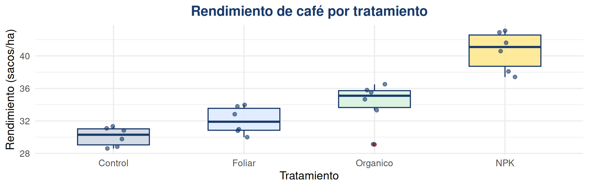
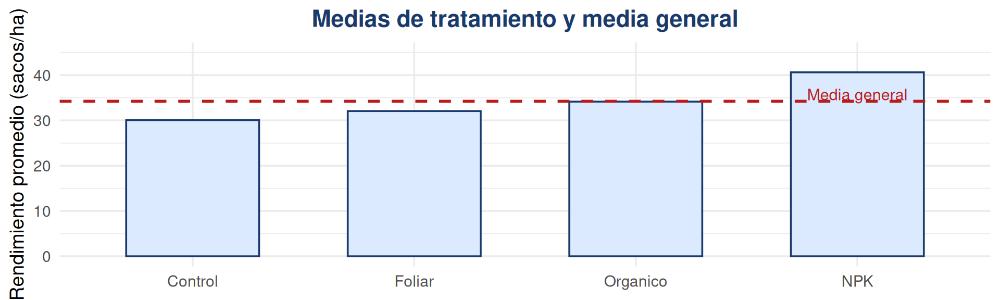
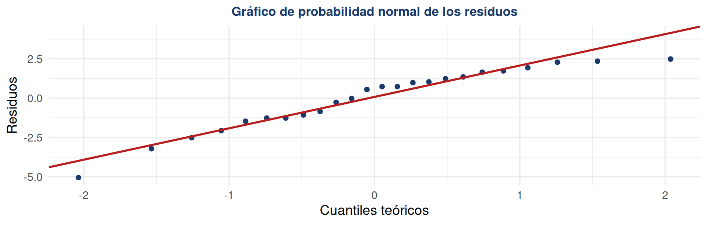
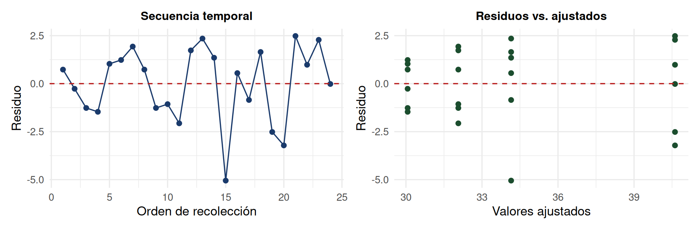
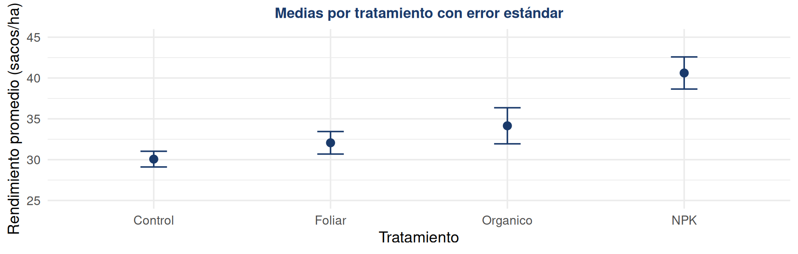
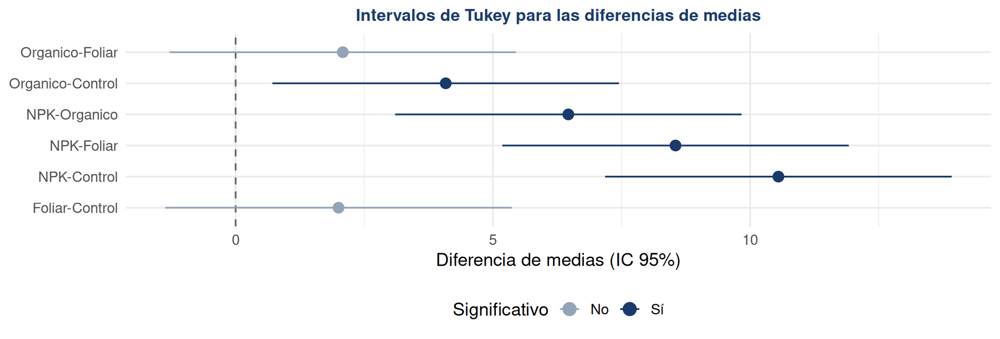
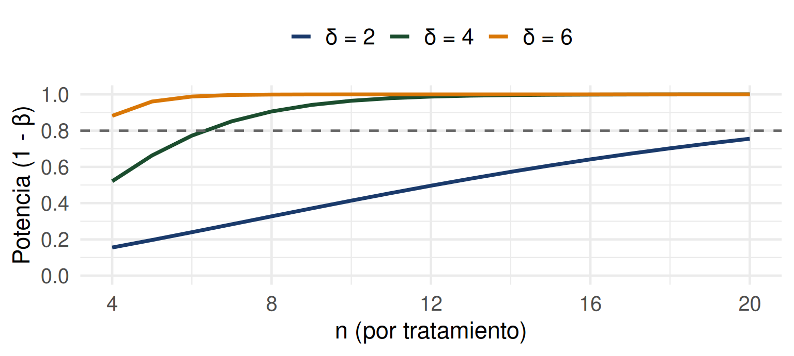

Bioestadística, Agronomía
Departamento de Estadística, Sede Bogotá
Contenido
Parte I: El modelo de Análisis de Varianza
- Motivación: comparar más de dos tratamientos.
- Ejemplo introductorio.
- Idea del análisis de varianza.
- Modelo de efectos fijos.
- Descomposición y cálculo de la suma de cuadrados.
- Tabla ANOVA y estadístico F.
- Estimación de parámetros y datos no balanceados.
Parte II: Verificación y comparación de medias
- Supuestos del modelo y residuos.
- Diagnóstico gráfico de residuos.
- Contrastes y contrastes ortogonales.
- Método de Scheffé.
- Comparación de pares: Tukey.
- Comparación con un control: Dunnett.
Parte III: Software, tamaño de muestra y dispersión
- Salida de un programa estadístico.
- Determinación del tamaño de muestra.
- Curvas características de operación.
- Métodos de cálculo del tamaño de muestra.
- Efectos de dispersión.
Parte IV: Enfoques alternativos
- Método de Kruskal-Wallis.
- Transformación de rangos.
- Resumen general y taller en clase.
Análisis de Varianza
Hasta ahora hemos comparado dos poblaciones. ¿Qué ocurre cuando es necesario comparar tres, cuatro o más tratamientos al mismo tiempo?
Comparar más de dos tratamientos
En la práctica agrícola es muy común evaluar varios tratamientos de manera simultánea: distintas variedades de semilla, niveles de fertilización, sistemas de riego o densidades de siembra. Una idea intuitiva sería comparar cada par de tratamientos con una prueba \(t\): con \(a=4\) tratamientos existen \(\binom{4}{2}=6\) comparaciones posibles, pero esto acumula el error.
Comparar el rendimiento del café bajo cuatro fertilizantes requiere comparar cuatro medias al mismo tiempo, no solo dos.
Error global inflado: con \(\alpha=0.05\) por prueba, la probabilidad de cometer al menos un Error Tipo I en las 6 pruebas puede superar el 25%, aunque \(H_0\) sea verdadera en todos los casos.
La solución: ANOVA. Permite comparar varias medias en una sola prueba global, controlando el nivel de significancia. Además, es una herramienta clave del Diseño de Experimentos, porque ayuda a planear, ejecutar y analizar estudios comparativos de forma rigurosa.
Ejemplo
Un agrónomo desea comparar el efecto de cuatro tratamientos de fertilización sobre el rendimiento del café (sacos/ha): un grupo Control (sin fertilizante), Foliar, Orgánico y NPK. Se asignan aleatoriamente 6 parcelas a cada tratamiento (\(n_i=6\), \(N=24\) en total).
| Parcela | Control | Foliar | Orgánico | NPK |
|---|---|---|---|---|
| 1 | 30.8 | 34.0 | 36.5 | 38.1 |
| 2 | 29.8 | 32.8 | 35.5 | 37.4 |
| 3 | 28.8 | 30.8 | 29.1 | 43.1 |
| 4 | 28.6 | 31.0 | 34.7 | 41.6 |
| 5 | 31.1 | 30.0 | 33.3 | 42.9 |
| 6 | 31.3 | 33.8 | 35.8 | 40.6 |
¿Existe evidencia estadística de que el tipo de fertilizante afecta el rendimiento promedio del café?
Paso 1: estadísticas descriptivas
Antes de calcular el ANOVA, es indispensable describir cada grupo: su media, su variabilidad y su tamaño muestral.
| Tratamiento | \(n_i\) | \(\bar y_{i.}\) | \(s_i\) |
|---|---|---|---|
| Control | 6 | 30.07 | 1.18 |
| Foliar | 6 | 32.07 | 1.69 |
| Orgánico | 6 | 34.15 | 2.71 |
| NPK | 6 | 40.62 | 2.41 |
Las medias muestrales difieren notablemente entre tratamientos, pero también hay variabilidad dentro de cada uno. El ANOVA cuantifica si esa diferencia es real o atribuible al azar.
Análisis de varianza
La idea central del ANOVA es descomponer la variabilidad total de los datos en dos fuentes: la variabilidad entre tratamientos y la variabilidad dentro de cada tratamiento.
Variabilidad entre tratamientos
Diferencias entre las medias de los distintos tratamientos. Si es grande respecto a la variabilidad dentro, sugiere un efecto real del tratamiento.
Variabilidad dentro de tratamientos
Diferencias entre observaciones que reciben el mismo tratamiento. Refleja el error experimental o aleatorio.

Si la variabilidad entre tratamientos es mucho mayor que la variabilidad dentro, existe evidencia de que al menos un tratamiento difiere de los demás.
Modelo de efectos fijos
El ANOVA de un factor con \(a\) tratamientos se representa mediante el siguiente modelo lineal estadístico:
\[ y_{ij} = \mu + \tau_i + \varepsilon_{ij} \qquad \begin{cases} i=1,\ldots,a \\ j=1,\ldots,n_i \end{cases} \]
- \(y_{ij}\): observación \(j\) del tratamiento \(i\).
- \(\mu\): media general.
- \(\tau_i=\mu_i-\mu\): efecto del tratamiento \(i\).
- \(\varepsilon_{ij}\): error aleatorio, \(\varepsilon_{ij} \sim N(0,\sigma^2)\) independientes.
- Restricción usual: \(\sum_{i=1}^a n_i\tau_i = 0\).
Normalidad
\(\varepsilon_{ij}\sim N(0,\sigma^2)\)
Homogeneidad
Varianza \(\sigma^2\) constante
Independencia
Asignación aleatoria
\[H_0:\tau_1=\tau_2=\cdots=\tau_a=0 \qquad \text{vs.} \qquad H_1: \text{algún } \tau_i \neq 0 \qquad \big(\text{equivalente a } H_0:\mu_1=\cdots=\mu_a\big)\]
Descomposición de la suma de cuadrados
El modelo \(\small y_{ij}=\mu+\tau_i+\varepsilon_{ij}\) no se observa directamente: \(\small \mu\), \(\small \tau_i\) y \(\small \varepsilon_{ij}\) se estiman con promedios.
\[\hat\mu=\bar y_{..} \qquad \hat\mu+\hat\tau_i=\bar y_{i.} \qquad \hat\varepsilon_{ij}=y_{ij}-\bar y_{i.}\]
Para cada dato, \(\small y_{ij}-\bar y_{..}\) mide su variación total respecto a la media general, y puede partirse en dos piezas:
\[y_{ij}-\bar y_{..}=\underbrace{(\bar y_{i.}-\bar y_{..})}_{\text{variación por tratamiento}}+\underbrace{(y_{ij}-\bar y_{i.})}_{\text{variación por error}}\]
Elevando al cuadrado y sumando sobre todas las observaciones, la variabilidad total se descompone en dos componentes:
\[ \underbrace{\sum_{i=1}^a\sum_{j=1}^{n_i}(y_{ij}-\bar y_{..})^2}_{SC_T} = \underbrace{\sum_{i=1}^a n_i(\bar y_{i.}-\bar y_{..})^2}_{SC_{Trat}} + \underbrace{\sum_{i=1}^a\sum_{j=1}^{n_i}(y_{ij}-\bar y_{i.})^2}_{SC_E} \]
\(\small SC_{Trat}\): variabilidad explicada por el tratamiento (entre grupos).
\(\small SC_E\): variabilidad no explicada, o error (dentro de los grupos).
Suma de cuadrados
Con la media general \(\bar y_{..}=34.225\) y las \(N=24\) observaciones del ejemplo, se calcula primero \(SC_T\):
Paso 1. Media general:
\[\bar y_{..}=\frac{\sum_{i}\sum_j y_{ij}}{N}=\frac{821.4}{24}=34.225\]
Paso 2. Suma de cuadrados total:
\[SC_T=\sum_{i=1}^4\sum_{j=1}^6 (y_{ij}-34.225)^2=463.73\]
Paso 3. Suma de cuadrados de tratamiento:
\[SC_{Trat}=6\sum_{i=1}^4 (\bar y_{i.}-34.225)^2\]
\[\begin{aligned}
SC_{Trat}
&= 6\big[(30.07-34.23)^2+(32.07-34.23)^2 \\
&\quad +(34.15-34.23)^2+(40.62-34.23)^2\big] \\
&= 376.86
\end{aligned}\]
Paso 4. Suma de cuadrados del error:
\[SC_E=SC_T-SC_{Trat}=463.73-376.86=86.87\]
Tabla ANOVA y estadístico \(F\)
Cada suma de cuadrados se divide por sus grados de libertad para obtener un cuadrado medio (CM). El estadístico de prueba es el cociente entre los cuadrados medios:
| Fuente | SC | gl | CM | F |
|---|---|---|---|---|
| Tratamiento | \(SC_{Trat}\) | \(a-1\) | \(CM_{Trat}=\frac{SC_{Trat}}{a-1}\) | \(F=\dfrac{CM_{Trat}}{CM_E}\) |
| Error | \(SC_E\) | \(N-a\) | \(CM_E=\frac{SC_E}{N-a}\) | |
| Total | \(SC_T\) | \(N-1\) |
Bajo \(H_0\), \(F=\dfrac{CM_{Trat}}{CM_E}\sim F_{a-1,\,N-a}\). Se rechaza \(H_0\) si \(F_{calc}>F_{\alpha,\,a-1,\,N-a}\).
Resultado del ejemplo: tabla ANOVA completa
| Fuente | \(SC\) | \(gl\) | \(CM\) | \(F\) | valor\(-p\) |
|---|---|---|---|---|---|
| Tratamiento | 376.86 | 3 | 125.62 | 28.92 | \(1.79\times10^{-7}\) |
| Error | 86.87 | 20 | 4.34 | ||
| Total | 463.73 | 23 |
\(CM_{Trat}=376.86/3=125.62\), \(CM_E=86.87/20=4.34\), \(F=125.62/4.34=28.92\).
Criterio de decisión
\[F_{calc}=28.92 > F_{0.05,3,20}=3.10\] \[\text{valor-p}=1.79\times10^{-7}<0.05\]
Se rechaza \(H_0\).
Conclusión
Existe evidencia estadística suficiente para afirmar que al menos un tratamiento de fertilización produce un rendimiento promedio diferente en el cultivo de café.
Estimación de los parámetros del modelo
Los parámetros del modelo de efectos fijos se estiman por mínimos cuadrados, utilizando los promedios muestrales:
| Parámetro | Estimador | Valor |
|---|---|---|
| \(\mu\) | \(\hat\mu=\bar y_{..}\) | 34.23 |
| \(\tau_{Control}\) | \(\bar y_{1.}-\bar y_{..}\) | -4.16 |
| \(\tau_{Foliar}\) | \(\bar y_{2.}-\bar y_{..}\) | -2.16 |
| \(\tau_{Organico}\) | \(\bar y_{3.}-\bar y_{..}\) | -0.08 |
| \(\tau_{NPK}\) | \(\bar y_{4.}-\bar y_{..}\) | 6.39 |
El tratamiento NPK presenta el mayor efecto estimado (\(\hat\tau_{NPK}=6.39\)): su rendimiento promedio supera la media general en 6.39 sacos/ha.
Datos no balanceados
En la práctica, no siempre es posible obtener el mismo número de observaciones \(n_i\) en cada tratamiento (parcelas perdidas, animales enfermos, plantas que no germinaron). A esto se le llama diseño no balanceado.
Las fórmulas se ajustan reemplazando \(n\) por \(\small n_i\) en \(\small SC_{Trat}=\sum_i n_i(\bar y_{i.}-\bar y_{..})^2\), y usando \(\small N=\sum_i n_i\) en lugar de \(\small a\cdot n\).
Por ejemplo, si en el Control se pierden 2 parcelas (\(\small n_1=4\)), el resto del cálculo procede igual, solo cambiando \(\small n_i\) y \(N\).
Un diseño muy desbalanceado reduce la potencia de la prueba; se recomienda planear tamaños de muestra similares entre tratamientos.
Errores comunes: fundamentos del ANOVA
- Rechazar \(H_0\) y concluir que todos los tratamientos son diferentes entre sí (el ANOVA solo indica que al menos uno difiere).
- Confundir el factor (variable cualitativa, ej. tipo de fertilizante) con la variable de respuesta (rendimiento).
- Aplicar el ANOVA sin verificar los supuestos de normalidad e igualdad de varianzas.
- Olvidar que \(SC_T = SC_{Trat} + SC_E\) siempre debe cumplirse; es una buena forma de verificar los cálculos.
Verificación del modelo y comparación de medias
Antes de confiar en los resultados del ANOVA es necesario verificar sus supuestos; después, identificar cuáles tratamientos difieren entre sí.
Supuestos del modelo
La validez del ANOVA depende de que se cumplan los supuestos del modelo de efectos fijos, los cuales se verifican mediante el análisis de los residuos \(\small e_{ij}=y_{ij}-\hat y_{ij}=y_{ij}-\bar y_{i.}\).
Normalidad
QQ-plot y prueba de Shapiro-Wilk
Homogeneidad
Residuos vs. ajustados y prueba de Bartlett
Independencia
Residuos en el orden de recolección
Si alguno de estos supuestos falla seriamente, el valor-p del ANOVA puede no ser confiable.
Supuesto de normalidad
La normalidad de los residuos se evalúa con un gráfico de probabilidad normal (QQ-plot) y, de forma más formal, con la prueba de Shapiro-Wilk.

Prueba de Shapiro-Wilk: \[H_0: \text{los residuos siguen una distribución normal}\] \[W=0.934 \qquad \text{valor-p}=0.118\]
Como valor\(-p =0.118>0.05\), no hay evidencia para rechazar la normalidad de los residuos: el supuesto se cumple razonablemente.
Residuos en secuencia y residuos versus ajustados
Graficar los residuos en el orden de recolección permite detectar tendencias no controladas (ej. condiciones climáticas cambiantes); graficarlos contra los valores ajustados permite detectar heterocedasticidad.

Sin patrón sistemático en el tiempo: respalda el supuesto de independencia.
Dispersión similar en todos los niveles (sin forma de embudo): respalda la homogeneidad de varianza.
Residuos versus otras variables
También es útil graficar los residuos contra variables que no forman parte del modelo, como la altitud de la finca o la fecha de siembra, para detectar fuentes de variación no controladas.
Si los residuos muestran un patrón respecto a la altitud, esta variable debería incluirse en el modelo, por ejemplo como bloque o covariable.
Ignorar una fuente de variación conocida (como la altitud) puede inflar el error experimental y reducir la potencia del ANOVA.
Homogeneidad de varianza: prueba de Bartlett
La prueba de Bartlett contrasta formalmente si las varianzas de los \(a\) tratamientos son iguales:
Hipótesis de Bartlett
\[H_0:\sigma_1^2=\sigma_2^2=\sigma_3^2=\sigma_4^2 \qquad \text{vs.} \qquad H_1: \text{alguna difiere}\]
\[K^2=3.44 \qquad gl=3 \qquad \text{valor-p}=0.329\]
Como valor-p \(=0.329>0.05\), no hay evidencia para rechazar la igualdad de varianzas: el supuesto de homogeneidad se cumple.
Comparaciones entre medias de tratamiento
Una vez que el ANOVA detecta diferencias significativas, surge la pregunta natural: ¿cuáles tratamientos difieren entre sí? Para responderla se utilizan las comparaciones múltiples.
Realizar muchas pruebas \(t\) no planeadas infla la tasa de error global; por ello se requieren métodos que controlen el error conjunto.
Una forma sencilla de comparar visualmente los tratamientos es graficar sus medias junto con un intervalo de confianza aproximado.

Cuando los intervalos no se superponen, hay evidencia visual de diferencia; cuando sí se superponen, la diferencia es incierta y debe confirmarse formalmente.
Contrastes
Un contraste es una combinación lineal de las medias de tratamiento cuyos coeficientes suman cero. Permite probar hipótesis específicas planteadas antes del experimento.
Contraste
\[C=\sum_{i=1}^a c_i\,\bar y_{i.} \qquad \text{con} \qquad \sum_{i=1}^a c_i=0\]
Pregunta de interés: ¿el Control rinde menos que el promedio de los tratamientos fertilizados?
\[C=\bar y_{Control}-\tfrac{1}{3}(\bar y_{Foliar}+\bar y_{Organico}+\bar y_{NPK}) \qquad c=\Big(1,-\tfrac13,-\tfrac13,-\tfrac13\Big)\]
Cálculo de un contraste: ejemplo completo
Paso 1. Hipótesis:
\[H_0: C=0 \qquad H_1: C\neq 0\]
Paso 2. Valor del contraste y error estándar:
\[C=30.07-\tfrac13(32.07+34.15+40.62)=-5.54\] \[EE(C)=\sqrt{CM_E\sum_i \frac{c_i^2}{n_i}}=\sqrt{4.34\Big(\tfrac{1}{6}+\tfrac{3}{6}\cdot\tfrac19\Big)}=0.98\]
Paso 3. Estadístico y criterio:
\[t=\frac{C}{EE(C)}=\frac{-5.54}{0.98}=-5.64 \qquad t_{0.025,20}=2.086\] \[|t|=5.64>2.086 \;\Rightarrow\; \text{se rechaza } H_0\]
Paso 4. Conclusión: existe evidencia estadística suficiente para afirmar que el rendimiento del Control es significativamente menor que el promedio de los tratamientos fertilizados.
Contrastes ortogonales
Dos contrastes con coeficientes \(\small c_i\) y \(\small d_i\) son ortogonales si \(\small \sum_i c_i d_i = 0\). Un conjunto de \(\small a-1\) contrastes ortogonales descompone \(\small SC_{Trat}\) en partes independientes, cada una con 1 grado de libertad.
| Contraste | Control | Foliar | Orgánico | NPK |
|---|---|---|---|---|
| Control vs. fertilizados | 3 | -1 | -1 | -1 |
| Foliar vs. (Orgánico, NPK) | 0 | 2 | -1 | -1 |
| Orgánico vs. NPK | 0 | 0 | 1 | -1 |
Este conjunto de 3 contrastes ortogonales permite descomponer los 3 grados de libertad de \(\small SC_{Trat}\) en preguntas de investigación específicas e independientes.
Método de Scheffé
El método de Scheffé permite construir intervalos de confianza simultáneos para cualquier contraste, incluso contrastes no planeados de antemano, controlando el error global en \(\alpha\).
Criterio de Scheffé
\[ S_{\alpha}=\sqrt{(a-1)\,F_{\alpha,a-1,N-a}} \] Se rechaza \(H_0\) si \(|t|>S_\alpha\).
Aplicado al contraste anterior: \(S_{0.05}=\sqrt{3\times3.10}=3.05\) \[|t|=5.64 > S_{0.05}=3.05 \;\Rightarrow\; \text{se confirma el rechazo de } H_0\]
Por ser más conservador que una prueba \(t\) simple, Scheffé se recomienda solo cuando se desean evaluar muchos contrastes no planeados.
Comparación de pares de medias: Tukey
La prueba de Tukey (HSD) es el método más utilizado para comparar todos los pares de medias de tratamiento, controlando el error global tipo I en \(\alpha\).
| Comparación | Diferencia | IC 95% | valor-p |
|---|---|---|---|
| Foliar - Control | 2.00 | (-1.37, 5.37) | 0.369 |
| Orgánico - Control | 4.08 | (0.72, 7.45) | 0.014 |
| NPK - Control | 10.55 | (7.18, 13.92) | <0.0001 |
| Orgánico - Foliar | 2.08 | (-1.28, 5.45) | 0.334 |
| NPK - Foliar | 8.55 | (5.18, 11.92) | <0.0001 |
| NPK - Orgánico | 6.47 | (3.10, 9.83) | 0.0002 |

Los intervalos que no contienen el cero indican pares con diferencias significativas: NPK difiere de los tres tratamientos restantes, y Orgánico difiere del Control. Foliar no se distingue claramente del Control ni del Orgánico.
Tratamientos con un control: Dunnett
Cuando interesa comparar cada tratamiento únicamente contra un grupo Control (y no entre ellos), la prueba de Dunnett es más potente que Tukey, pues realiza menos comparaciones.
| Comparación | Diferencia | IC 95% Dunnett | valor-p |
|---|---|---|---|
| Foliar - Control | 2.00 | (-1.05, 5.05) | 0.256 |
| Orgánico - Control | 4.08 | (1.03, 7.14) | 0.008 |
| NPK - Control | 10.55 | (7.50, 13.60) | <0.001 |
Nótese que el valor-p de Orgánico-Control es menor con Dunnett (0.008) que con Tukey (0.014): al hacer menos comparaciones, Dunnett tiene mayor potencia para este objetivo específico.
Errores comunes: comparaciones múltiples
- Aplicar pruebas \(t\) por pares sin ajuste, en lugar de Tukey, Scheffé o Dunnett.
- Usar Tukey cuando el objetivo real es comparar contra un único control (Dunnett es más potente en ese caso).
- Interpretar diferencias significativas en Tukey sin verificar primero que el ANOVA global fue significativo.
- Confundir un contraste planeado de antemano con una comparación exploratoria (esta última requiere Scheffé o Tukey, no una prueba t simple).
Salida de software, tamaño de muestra y efectos de dispersión
¿Cómo se interpreta la salida de un software estadístico y cuántas observaciones se necesitan antes de iniciar el experimento?
Salida de un programa estadístico
La mayoría del software estadístico (R, Minitab, SAS, SPSS) presenta la tabla ANOVA con la misma estructura básica. Es fundamental saber leerla correctamente, sin importar el programa utilizado.
| Columna típica | Significado |
|---|---|
Df / gl
|
Grados de libertad de cada fuente |
Sum Sq / SC
|
Suma de cuadrados |
Mean Sq / CM
|
Cuadrado medio (SC / gl) |
F value
|
Estadístico de prueba |
Pr(>F) / valor-p
|
Probabilidad de obtener un F tan extremo bajo \(H_0\) |
Sin importar el software, la regla de decisión es siempre la misma: se rechaza \(H_0\) si el valor-p es menor que \(\alpha\).
Determinación del tamaño de muestra
Antes de ejecutar el experimento, es importante determinar cuántas repeticiones \(n\) por tratamiento se necesitan para detectar una diferencia de interés con una potencia adecuada.
Un \(n\) insuficiente puede llevar a no detectar diferencias reales (Error Tipo II, \(\beta\) alto).
Un \(n\) excesivo desperdicia recursos (parcelas, animales, tiempo, dinero).
Existen tres enfoques clásicos: curvas características de operación, especificación de un incremento de \(\sigma\), y el método del intervalo de confianza.
Curvas características de operación
Las curvas características de operación (curvas OC) relacionan la probabilidad de cometer un Error Tipo II (\(\small \beta\)) con el tamaño de muestra y la magnitud de las diferencias entre tratamientos.

A mayor diferencia \(\delta\) a detectar, se necesita un \(n\) menor para alcanzar la misma potencia; a menor \(\delta\), se requiere un \(n\) mucho mayor.
Especificación de un incremento de la desviación estándar
Una alternativa para definir el tamaño del efecto es expresarlo como un múltiplo de la desviación estándar del error (\(\sigma\)), en lugar de una unidad de medida específica.
Ejemplo: con \(\sigma\approx2.08\) sacos/ha (estimado del experimento), detectar un efecto de \(\delta=1.5\sigma\approx3.1\) sacos/ha equivale a una diferencia moderadamente grande entre tratamientos.
Expresar el efecto en unidades de \(\sigma\) facilita comparar la planeación de tamaño de muestra entre experimentos con escalas de medición distintas.
Método del intervalo de confianza
Una forma práctica de planear el tamaño de muestra es fijar el ancho deseado del intervalo de confianza para la diferencia entre dos medias de tratamiento y despejar \(n\).
Si se desea un intervalo de confianza del 95% para \(\small \mu_i-\mu_j\) con un ancho total no mayor a 4 sacos/ha, y \(\small \sigma\approx2.08\), se despeja \(n\) de:
\[\text{ancho}=2\,t_{\alpha/2,N-a}\sqrt{\frac{2\sigma^2}{n}}\leq 4\]
Este enfoque es más intuitivo para los investigadores que las curvas OC, ya que se expresa directamente en las unidades originales de la variable de respuesta.
Tamaño de muestra para el experimento del café
Suponga que el agrónomo desea detectar una diferencia mínima de \(\delta=3\) sacos/ha entre tratamientos, con \(\alpha=0.05\) y potencia del \(80\%\), usando \(CM_E\approx4.34\) como estimación de \(\sigma^2\).
Aplicando el método de potencia para ANOVA con \(a=4\) grupos: \[n\approx 11 \text{ parcelas por tratamiento } (N\approx44 \text{ en total})\]
El experimento original (\(n=6\)) tenía un tamaño de muestra menor al recomendado para detectar diferencias de esta magnitud con una potencia del 80%; sin embargo, las diferencias observadas fueron lo bastante grandes para alcanzar significancia.
Efectos de dispersión
En algunos experimentos no solo interesa el efecto de un factor sobre la media de la respuesta, sino también sobre su variabilidad. A esto se le llama efecto de dispersión.
| Tratamiento | \(s_i\) (sacos/ha) |
|---|---|
| Control | 1.18 |
| Foliar | 1.69 |
| Orgánico | 2.71 |
| NPK | 2.41 |
El Orgánico presenta más del doble de variabilidad que el Control: además de aumentar el rendimiento promedio, parece hacerlo menos uniforme entre parcelas (aunque la prueba de Bartlett no detectó esta diferencia como significativa con este tamaño de muestra).
En agricultura, un tratamiento más uniforme (menor varianza) puede ser preferible aunque tenga una media levemente menor, pues reduce el riesgo para el productor.
Métodos no paramétricos en el ANOVA
¿Qué alternativa existe cuando no se cumple el supuesto de normalidad?
Métodos no paramétricos en ANOVA
Cuando el supuesto de normalidad no se cumple (o las muestras son pequeñas), se utilizan alternativas no paramétricas basadas en los rangos de las observaciones, en lugar de sus valores originales.
La prueba de Kruskal-Wallis es el equivalente no paramétrico del ANOVA de un factor. Contrasta si las \(a\) poblaciones tienen la misma distribución, utilizando los rangos de las observaciones.
Hipótesis de Kruskal-Wallis
\[H_0: \text{las } a \text{ poblaciones tienen la misma distribución}\] \[H_1: \text{al menos una población difiere}\]
\[H=\frac{12}{N(N+1)}\sum_{i=1}^a\frac{R_i^2}{n_i}-3(N+1)\] donde \(R_i\) es la suma de los rangos del tratamiento \(i\).
Cálculo de Kruskal-Wallis: ejemplo completo
Asignando rangos de 1 a 24 a todas las observaciones (sin distinguir tratamiento) y sumando por grupo:
| Tratamiento | Control | Foliar | Orgánico | NPK |
|---|---|---|---|---|
| Suma de rangos \(R_i\) | 32.5 | 57.5 | 81.0 | 129.0 |
\[H=\frac{12}{24(25)}\left(\frac{32.5^2}{6}+\frac{57.5^2}{6}+\frac{81^2}{6}+\frac{129^2}{6}\right)-3(25)=16.89\]
\[gl=a-1=3 \qquad \chi^2_{0.05,3}=7.81 \qquad \text{valor-p}=0.0007\] \[H=16.89>7.81 \;\Rightarrow\; \text{se rechaza } H_0\]
Coincide con la del ANOVA paramétrico: el tipo de fertilizante afecta el rendimiento del café.
Transformación de rangos
La prueba de Kruskal-Wallis es, en esencia, un ANOVA aplicado a los rangos de las observaciones en lugar de sus valores originales.
Ventaja: no requiere el supuesto de normalidad ni de homogeneidad estricta de varianzas.
Limitación: se pierde información al usar solo el orden de los datos, no su magnitud exacta.
La transformación de rangos puede aplicarse de forma general a otros diseños experimentales más complejos, no solo al ANOVA de un factor.
Resumen general de la clase
| Tema | Pregunta que responde | Herramienta |
|---|---|---|
| ANOVA de un factor | ¿Difieren las \(a\) medias? | Estadístico \(F\) |
| Diagnóstico de residuos | ¿Son válidos los supuestos? | QQ-plot, Shapiro, Bartlett |
| Contrastes y Scheffé | ¿Se cumple una hipótesis específica? | Estadístico \(t\) o \(F\) de un contraste |
| Tukey | ¿Cuáles pares difieren? | Diferencia honestamente significativa |
| Dunnett | ¿Quién difiere del control? | Comparaciones contra un testigo |
| Tamaño de muestra | ¿Cuántas repeticiones se necesitan? | Análisis de potencia |
| Kruskal-Wallis | ¿Difieren sin normalidad? | ANOVA sobre rangos |
Errores comunes generales
- Ignorar la verificación de supuestos antes de interpretar la tabla ANOVA.
- Confundir significancia estadística con relevancia práctica del efecto.
- No planear el tamaño de muestra antes de iniciar el experimento.
- Usar comparaciones múltiples sin que el ANOVA global haya sido significativo.
- Aplicar Kruskal-Wallis de forma automática, sin antes verificar si realmente falla el supuesto de normalidad.
Taller en Clase
Instrucciones
Para cada ejercicio:
- Plantee las hipótesis nula y alternativa.
- Construya la tabla ANOVA con la información suministrada.
- Aplique el criterio de decisión con el valor crítico o el valor-p indicado.
- Indique si se rechaza o no la hipótesis nula.
- Redacte una conclusión en el contexto del problema.
Ejercicio 1
Problema
Un investigador compara el rendimiento (kg/parcela) de tres variedades de fríjol en el Huila, con 5 parcelas por variedad (\(N=15\)). Obtiene \(SC_{Trat}=42.6\) y \(SC_E=18.4\).
| Fuente | SC | gl |
|---|---|---|
| Variedad | 42.6 | 2 |
| Error | 18.4 | 12 |
Utilice: \(F_{0.05,2,12}=3.89\)
Ejercicio 2
Problema
Una empresa evalúa el efecto de 4 sistemas de riego sobre el rendimiento de caña panelera, con 6 parcelas por sistema (\(N=24\)). El software reporta la siguiente tabla ANOVA:
| Fuente | SC | gl | CM | F |
|---|---|---|---|---|
| Sistema | 210.5 | 3 | 70.17 | ? |
| Error | 112.0 | 20 | 5.6 |
Utilice: \(F_{0.05,3,20}=3.10\)
Ejercicio 3
Problema
En un ensayo con 5 dosis de un biofertilizante sobre el rendimiento de tomate (4 parcelas por dosis, \(N=20\)), el ANOVA arrojó \(F_{calc}=2.45\) y un valor-p de \(0.087\).
Utilice: \(\alpha=0.05\)
Ejercicio 4
Problema
Tras rechazar \(H_0\) en un ANOVA con 4 variedades de mango (Tommy, Kent, Keitt y Criollo), la prueba de Tukey reporta los siguientes intervalos de confianza (95%) para las diferencias de medias:
| Comparación | Intervalo 95% |
|---|---|
| Kent - Tommy | (-1.2, 3.4) |
| Keitt - Tommy | (2.1, 6.5) |
| Criollo - Tommy | (-4.8, -0.6) |
Indique cuáles variedades difieren significativamente de Tommy y por qué.
Ejercicio 5
Problema
En un experimento con 3 densidades de siembra de maíz, los residuos del ANOVA no superaron la prueba de Shapiro-Wilk (valor-p \(=0.01\)). Al aplicar Kruskal-Wallis sobre las sumas de rangos \(R_1=45\), \(R_2=78\), \(R_3=183\) (\(N=30\), 10 por grupo), se obtiene \(H=13.27\).
Utilice: \(\chi^2_{0.05,2}=5.99\)